Naturezas de operação de entrada
Pré-requisitos
- A empresa precisa ter nota de entrada. Para abrir a tela, ela também precisa ter NF-e, notas fiscais, nota de entrada ou NFC-e.
- Se a opção não aparecer para você, peça acesso ao administrador da conta.
- Tenha em mãos o código de regime tributário da empresa, o CFOP, a situação tributária (CST ou CSOSN) e as alíquotas da operação de entrada.
Importante
- O Código de regime tributário do cabeçalho define a aba de ICMS: Simples nacional exibe a aba Simples; Regime normal oculta a aba Simples e exibe a aba ICMS.
- Em Adicionar exceção, o botão próximo tenta gravar o cadastro. Sem uma regra válida, a tela informa que não foi possível salvar o cadastro e que uma regra de exceção válida deve ser informada. Nesse caso, o cadastro não é gravado.
- Cancelar no painel de exceção fecha o painel sem gravar a natureza.
- Se em Preço considerado você escolher Preço de custo, confirme que esse preço será usado nas notas.
Instruções
-
Acesse Configurações > Configurações ERP. Na aba Notas Fiscais, abra Naturezas de operação de entrada (tributação).
-
Pesquise pela descrição, filtre as naturezas ativas ou limpe os filtros. A grade mostra Descrição, CFOP, Padrão, Série e Consumidor final.

-
Na linha da natureza, acione a ação desejada: clonar operação, tornar padrão para compra, tornar operação de saída, enviar natureza para empresas ou inativar operação.

-
Clique em Incluir natureza de operação.

-
Preencha o cabeçalho:
- Descrição
- Finalidade: Normal, Devolução, Bonificação ou Remessa
- Código de regime tributário: Simples nacional, Simples nacional - excesso de sublimite de receita bruta, Regime normal ou Microempreendedor Individual (MEI)
- Série
- Consumidor final: Sim ou Não
- Observações padrões para notas desta operação: texto livre. No link variáveis disponíveis, copie os marcadores e inclua os colchetes.
- Se o regime for Simples nacional, abra a aba Simples e informe:
-
CSOSN: 101, 102, 103, 201, 202, 203, 300, 400, 500 ou 900. A opção 400 aparece como Não tributada.
-
CFOP. Use Pesquisar ao lado do campo, se precisar localizar o código.
-
ICMS DIFAL para não contribuinte: Sim ou Não. O texto de ajuda indica ICMS para a UF de Destino.
-
Código de benefício fiscal, observações e Informações ao Fisco. No link variáveis disponíveis de cada campo, use os marcadores entre colchetes.
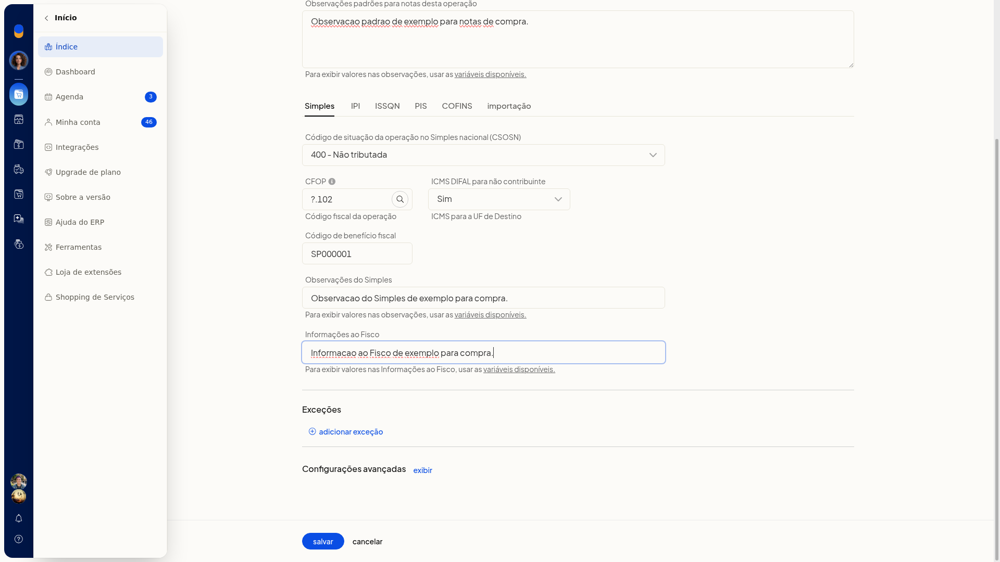
- Se o regime for Regime normal, abra a aba ICMS e escolha a Situação tributária:
-
00 Tributada integralmente
-
10 Tributada e com cobrança do ICMS por ST
-
20 Com redução de base de cálculo
-
30 Isenta ou não tributada e com cobrança do ICMS por ST
-
40 Isenta
-
41 Não tributada
-
50 Suspensão
-
51 Diferimento
-
60 ICMS cobrado anteriormente por ST
-
90 Outras
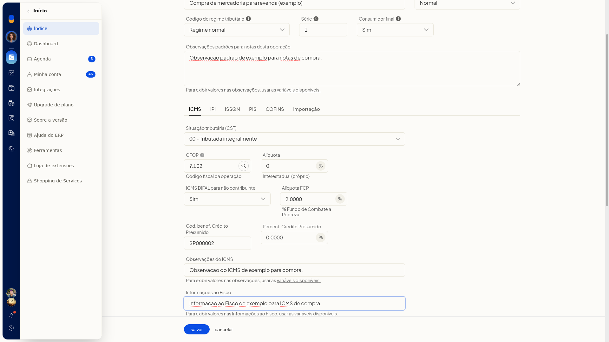
- Complete os campos que a situação tributária exibe:
-
No CST 10, preencha a substituição tributária: Alíquota ICMS-ST (percentual no estado de destino, com vírgula), Base de Cálculo ICMS-ST (use valor diferente de 100 só se houver redução), MVA / IVA, Alíquota FCP ICMS-ST, Alíquota PIS e Alíquota COFINS sobre a substituição tributária.
-
No CST 20, informe Base (percentual com vírgula), Calcular ICMS Desonerado (Sim ou Não) e Motivo da desoneração.
-
No CST 51, informe Percentual de Diferimento, Alíquota FCP, Percentual FCP Diferido e Cód. benef. Redução BC, quando o campo aparecer.
-
No CST 60, informe Alíquota ICMS efetivo e Base ICMS efetivo. Marque Obter ICMS-ST retido anteriormente a partir de nota fiscal de compra se quiser buscar o ICMS-ST retido da nota de compra.
-
Informe também CFOP, Alíquota (percentual do ICMS próprio, com vírgula; na substituição tributária o rótulo complementar é Interestadual (próprio)), ICMS DIFAL para não contribuinte, Código de benefício fiscal, Cód. benef. Crédito Presumido, Percent. Crédito Presumido (formato 0,0000), Observações do ICMS e Informações ao Fisco.


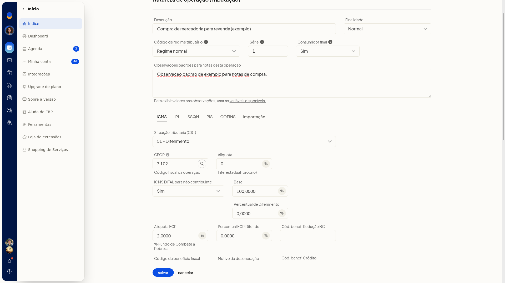

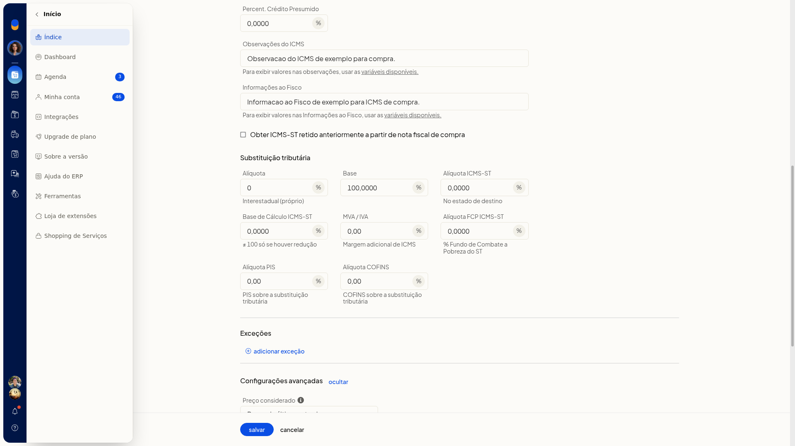
-
Nas observações do ICMS, use com colchetes: [VALOR_BASE_ICMS], [VALOR_BASE_DIFERIMENTO], [VALOR_DIFERIMENTO], [VALOR_CREDITO_ICMS], [ICMS_PRESUMIDO], [ALIQUOTA_CREDITO_ICMS], [VALOR_ICMS_DESONERADO], [NUMERO_CUPOM] e [DATA_CUPOM]. Em Informações ao Fisco do ICMS, use os mesmos marcadores, exceto [NUMERO_CUPOM] e [DATA_CUPOM]. Abra variáveis disponíveis para ver a lista na própria página.

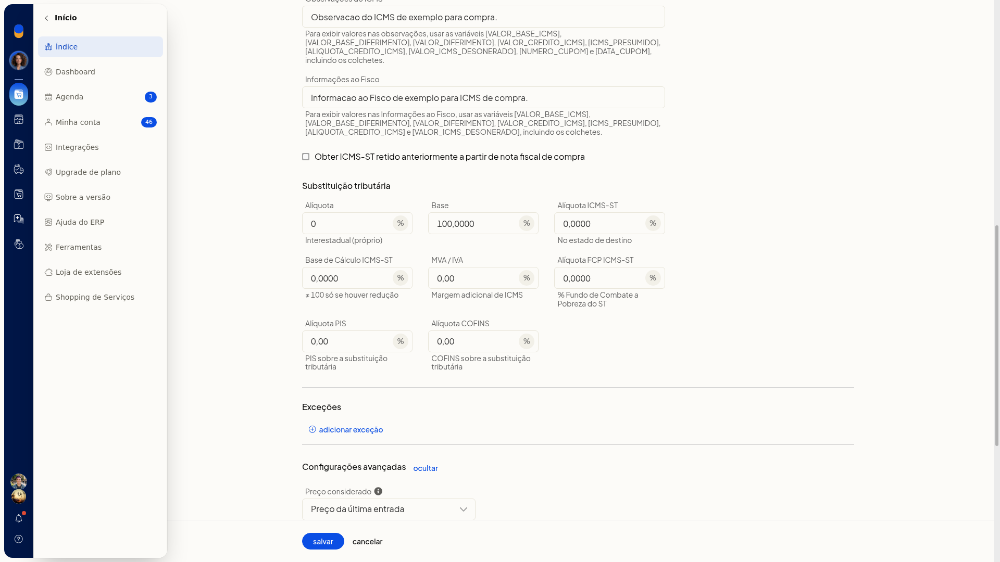
-
Preencha a aba IPI: Situação tributária do IPI (00 Entrada com recuperação de crédito, 01 Entrada tributada alíquota zero, 02 Entrada isenta, 03 Entrada não-tributada, 04 Entrada imune, 05 Entrada com suspensão, 49 Outras entradas ou Não destacar IPI), Alíquota do IPI, Código de enquadramento, observações e Informações ao Fisco.
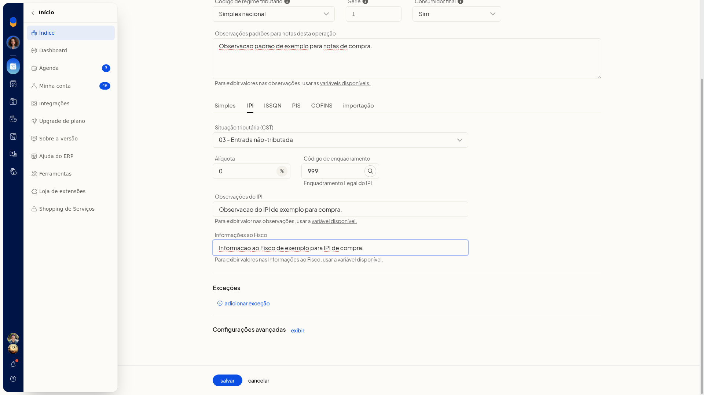
- Preencha a aba ISSQN: situação (tributado, isento ou outra situação), Alíquota do ISSQN, Base do ISSQN, Descontar ISS (Sim ou Não; o texto de ajuda indica que o desconto entra no total da nota), observações e Informações ao Fisco.
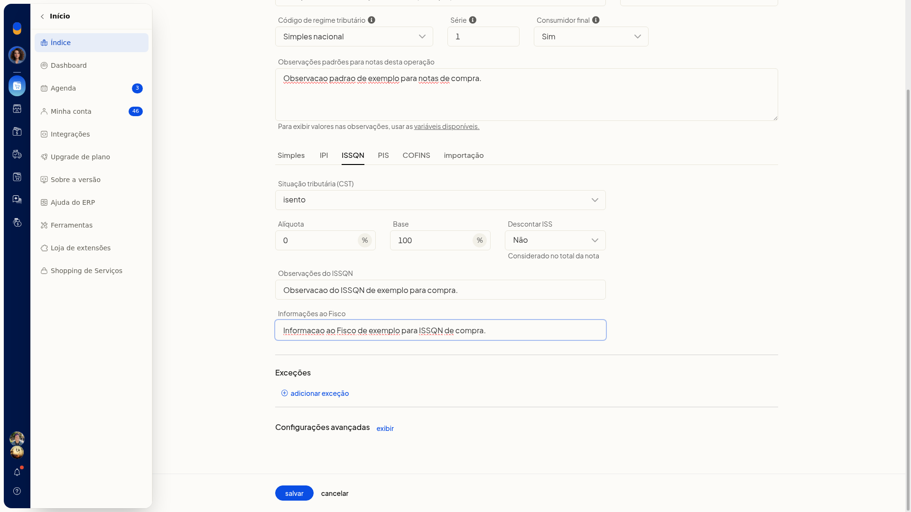
- Preencha a aba PIS: Situação tributária do PIS (01 a 09, 49, 50 a 56, 60 a 67 e 70 a 73), Alíquota PIS, Base do PIS, observações e Informações ao Fisco.
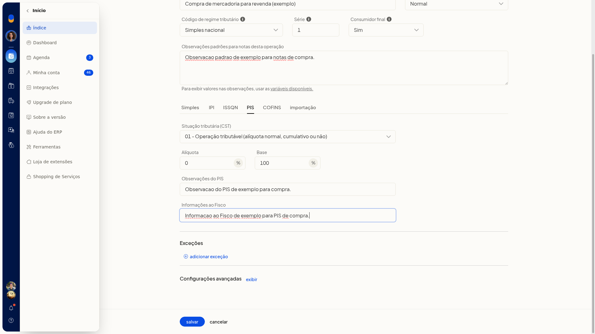
- Preencha a aba COFINS com a mesma faixa de situações do PIS, Alíquota COFINS, Base do COFINS, observações e Informações ao Fisco.
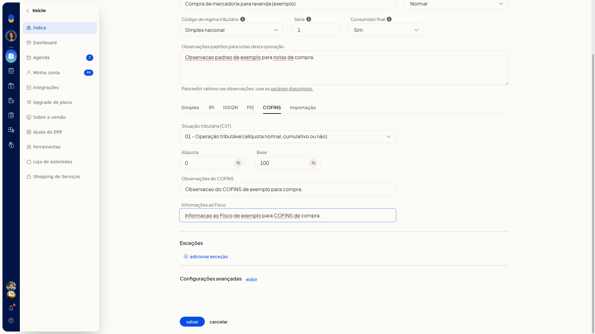
- Preencha a aba Importação: Situação da Importação (Tributado ou Não tributado), Alíquota da Importação, observações e Informações ao Fisco. Em cada aba, o link variáveis disponíveis lista os marcadores daquela aba. Inclua os colchetes.
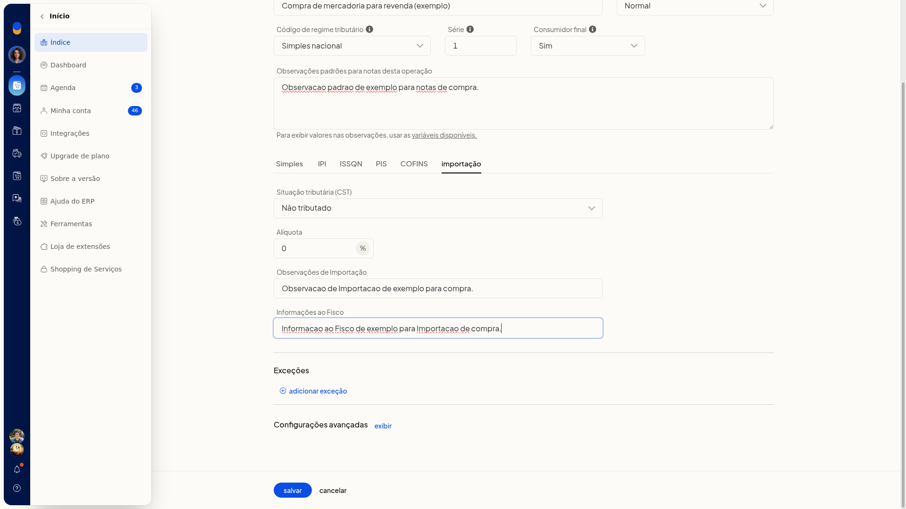
- Para uma regra por estado, produto, origem ou NCM, clique em Adicionar exceção. Informe a regra antes de clicar em próximo:
-
UF da exceção: de AC a TO, EX ou Qualquer estado
-
Origem da exceção: Qualquer origem ou os códigos 0 a 8
-
produto: clique em Adicionar e informe o SKU na linha
-
NCM: clique em Adicionar e informe o NCM na linha


- Só clique em próximo depois de informar uma regra válida. Sem regra válida, o cadastro não é gravado e a tela permanece no aviso.

- Abra Configurações avançadas e defina:
-
Preço considerado: Preço de custo ou Preço da última entrada. Com Preço de custo, confirme que esse preço será usado nas notas.
-
Considerar CMV no DRE: Sim ou Não
-
Compra de produtor rural: Sim ou Não
-
Permite lançamento e reserva de estoque: Sim ou Não
-
Alíquota funrural
-
Descontar funrural do total faturado: Sim ou Não
-
Redução da Base de Cálculo do ICMS-ST: Padrão ou Antes de somar o IPI
-
Somar despesas na importação: Sim ou Não. O texto de ajuda indica somar ICMS, PIS, COFINS e despesas aduaneiras ao total da nota.
-
Atualizar preço de última compra do produto: Sim ou Não
-
Descontar desoneração do total da nota fiscal: Sim ou Não
-
Itens compõem valor total da NF-e: Compõem total da nota fiscal; Compõem total da nota fiscal, mas sem gerar faturas no XML da NFe (o valor dos itens também não entra nas parcelas); ou Não (todos os totalizadores e valores da nota serão zerados)
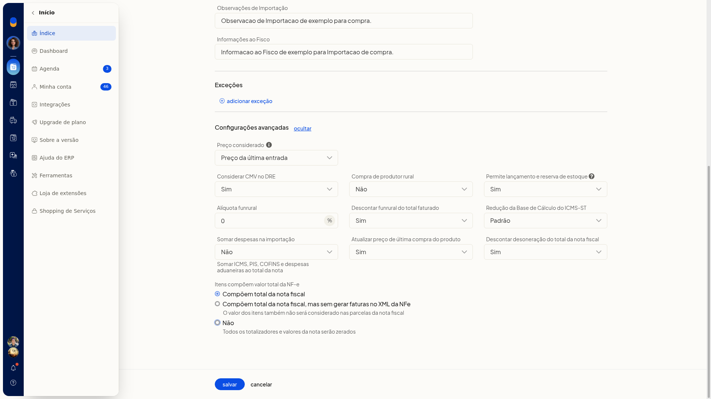
- Clique em Salvar para gravar a natureza.